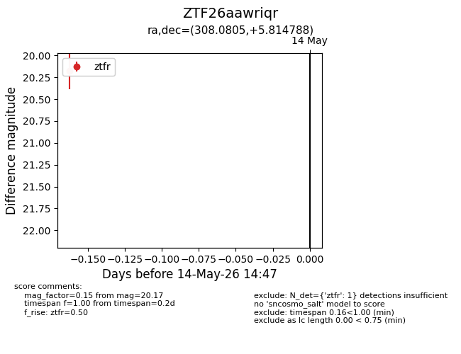
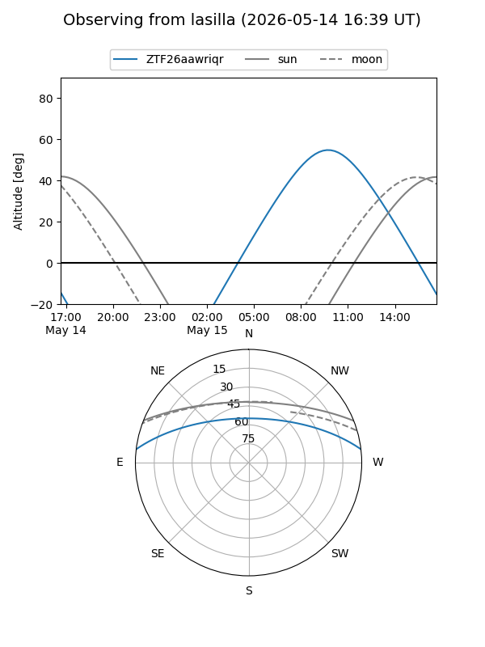
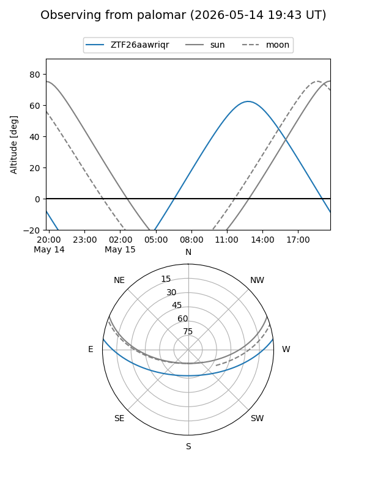

ZTF26aawriqr
Target ZTF26aawriqr at 2026-05-14 14:48
Aliases and brokers:
FINK: link
Lasair: link
ALeRCE: link
alt names
ZTF26aawriqr (ztf,fink_ztf)
Coordinates:
equatorial (ra, dec) = 308.0805,+5.81479
equatorial (HMS+DMS) = 20:32:19.32,+05:48:53.24
galactic (l, b) = (50.4142,-19.33468)
Flags:
Photometry:
last ztfr=20.17
1 ztfr detections
Lightcurve

Visibility


Additional plots